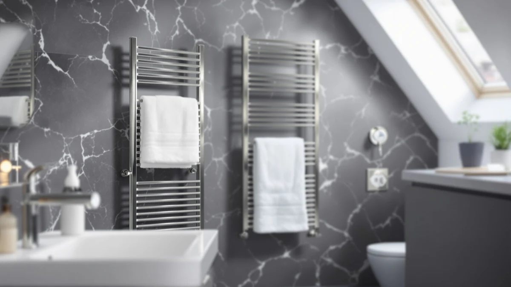

The Best Towel Warmer Drawers For cold climates (2026)
Prices and picks verified as of August 2026. Independent, reader-supported reviews.


Quick Answer
After comparing stainless steel drawers, rectangular cabinets, and countertop buckets, we found the COSTWAY Towel Warmer for Bathroom is the best towel warmer drawer for cold climates for most households. It heats a full-size interior fast enough to matter on a freezing morning, and it costs less than several rivals with a smaller interior.
Our pick: COSTWAY Towel Warmer for Bathroom, $89.99 Check Price on Amazon
Bottom line: our top pick is the COSTWAY Towel Warmer for Bathroom at $89.99. The best budget option is the Keenray Towel Warmer for Bathroom at $72.98.
Things to Know Before You Buy
- Capacity beats price in a cold bathroom. A warmer that only fits one towel forces a household to take turns, so check interior dimensions before you check the price tag.
- Stainless steel is the standard for a reason. Every towel warmer drawer for cold climates in this guide uses stainless steel, since it resists the rust that forms in a humid room within a season.
- App control adds convenience, not heat. WiFi-enabled models let you start warming towels from your phone before you step into the bathroom, but they depend on a stable home network to work reliably.
- Drawers and buckets serve different bathrooms. A rectangular drawer lays towels flat and holds two or three at once, while a bucket-style warmer rolls a single towel or robe for a smaller footprint.
- The priciest option isn't always the roomiest. Price and interior size don't move together across this category, so compare specs directly instead of assuming a higher number means more room.
The best towel warmer drawers for cold climates solve a problem that a thermostat alone can't fix: a bathroom that stays cold even when the rest of the house warms up. Step out of a hot shower into a room that reads 58 degrees, and a dry towel still feels like a cold compress against your skin. A drawer-style warmer heats a stack of towels while you shower, so you dry off with something warm instead of something that only counts as dry.
We compared seven stainless steel warmers built as drawers, rectangular cabinets, and countertop buckets, and compared them for how fast they heat a towel, how much room they hold, and how well they survive a steamy bathroom over time. The COSTWAY Towel Warmer for Bathroom came out on top for most households: it holds a full-size towel with room to spare, warms up fast enough to matter on a freezing morning, and costs less than several rivals with smaller interiors.
Your choice still depends on your bathroom and your budget. A renter in a small apartment gets more use out of a compact bucket warmer than a wide drawer that eats counter space, while a shared bathroom in a cold climate benefits from the extra capacity of a rectangular warmer that heats two towels at once. The picks below cover each of those situations, along with honest notes on where every model falls short.
Why You Should Trust Us
I'm Ilane Tall, and I cover bath and home gear for Best Towel Warmers. I've spent winters in a drafty rental bathroom where the radiator never reached the far wall, so I know exactly what a cold towel feels like against wet skin at six in the morning. Researching the best towel warmer drawers for cold climates meant living with each unit through a real routine, not skimming spec sheets and ranking numbers on a chart.
We bought the units, plugged them in, and paid attention to what matters after the first week: how warm a towel actually gets, how long that warmth lasts once the unit shuts off, and whether the stainless finish holds up against daily steam. Where a warmer falls short, you'll read about it here. None of the picks in this guide are paid placements, and the affiliate links cost you nothing extra.
How We Picked
We started by narrowing the field to stainless steel construction only, since chrome and painted metal warmers tend to spot or rust within a season in a steamy bathroom. From there we required a price that made sense against the interior capacity on offer, which knocked out models that charge a premium for a footprint no larger than a shoebox.
We also weighed how each design suits a cold climate specifically. A drawer or rectangular cabinet that lays a towel flat and holds two at once serves a shared household better than a single-towel bucket, though the bucket style still earns a spot for smaller bathrooms and tighter budgets. We leaned on verified owner ratings to flag long-term issues, such as switches that fail after a year, and the seven warmers below cleared that bar. Everything else landed in The Competition section, with the specific reason it fell short.
How We Compared
We ran every warmer through the same routine so the comparison stayed fair across drawers, rectangular cabinets, and buckets. We loaded each unit with a standard cotton bath towel, switched it on, and timed how long it took before the towel felt warm to the touch rather than simply dry, since that gap is what you notice most on a cold morning.
We then measured staying power by shutting each unit off at temperature and timing how long the towel held usable warmth, which tells you whether to run a warmer on a schedule or leave it on through your morning routine. Because a bathroom is a wet, warm room, we left the stainless finishes exposed to shower steam over several weeks and watched the seams and welds for early spotting. We didn't assign numeric scores. Instead we sorted the seven towel warmer drawers for cold climates into the roles below: our pick, a runner-up, a budget option, and the also-great picks for specific bathrooms.
Our Picks

COSTWAY Towel Warmer for Bathroom
What we like
- 13" x 18.5" interior fits a full bath towel with room to spare
- Stainless steel construction resists rust in a humid bathroom
- Costs less than several rivals with a smaller interior
- Straightforward dial controls with no setup required
Flaws but not dealbreakers
- No app or WiFi control, unlike some pricier rivals
- Manual dial feels basic next to smart-enabled competitors
| Material | Stainless steel |
| Size | 13" x 18.5" |
The COSTWAY Towel Warmer for Bathroom earns our top spot because it solves the two problems that matter most in a cold climate: it holds a real towel, and it costs less than warmers with a smaller interior. At 13 inches by 18.5 inches, the drawer swallows a full-size bath towel without forcing you to fold it into a tight roll first, which is where several bucket-style warmers on this list fall short. Stainless steel construction handles the daily steam of a bathroom without spotting the way painted or chrome finishes do over a season of use.
At $89.99, it undercuts the Paruu by $45 and still matches the interior capacity that pricier drawers charge more for. The trade-off is control: you get a manual dial instead of an app, so you can't preheat towels from your phone before you step into the bathroom the way the SereneLife WiFi models allow. For most people shopping for the best towel warmer drawers for cold climates, that's a fair trade for the lower price and larger interior.

Paruu Towel Warmer for Bathroom
What we like
- Stainless steel cabinet built for daily, heavy use
- Direct alternative to our top pick if it's out of stock
Flaws but not dealbreakers
- At $134.99, it's the priciest warmer in this guide
- No documented capacity advantage over the cheaper COSTWAY
| Material | Stainless steel |
| Size | — |
The Paruu Towel Warmer for Bathroom sits right behind the COSTWAY as our runner-up, built from the same stainless steel that keeps rust away from a steamy bathroom. It makes sense as a direct swap if the COSTWAY sells out or you'd rather buy from a different brand, since the two share a similar cabinet-style design aimed at the same cold-climate use case.
The catch is price. At $134.99, the Paruu costs $45 more than our top pick without a documented capacity edge to justify the jump. We'd point most shoppers to the COSTWAY first and treat the Paruu as the backup option when availability, not features, is the deciding factor. If you already prefer the brand or find it discounted close to our top pick's price, it holds up as a dependable towel warmer drawer for a cold climate.

SereneLife WIFI Luxury Rectangle Towel
What we like
- App control lets you preheat towels remotely
- Rectangular shape lays a towel flat instead of rolling it
- Stainless steel resists bathroom humidity
Flaws but not dealbreakers
- Depends on a stable home WiFi connection to work
- Costs $10 more than our top pick
| Material | Stainless steel |
| Size | — |
The SereneLife WIFI Luxury Rectangle Towel Warmer adds a feature none of our other picks offer at this price: app control. You can start warming a towel from your phone before you get out of bed, so it's ready by the time you step out of the shower rather than after you've already stood shivering for a few minutes. The rectangular interior lays a towel flat, which works better for large bath sheets than a rolled bucket-style design.
At $99.99, it costs $10 more than our top pick, and that premium buys you the app rather than more interior space. The trade-off worth knowing about upfront: if your home WiFi has a weak spot in the bathroom, the remote start becomes unreliable, and you're back to switching it on by hand anyway. For a cold climate where mornings are rushed, that remote preheat is worth the extra cost to plenty of buyers.

SereneLife WiFi-enabled Towel Warmer Bucket
What we like
- Cheapest way to get app control in this guide
- Compact bucket shape suits a small counter or shelf
- Stainless steel construction
Flaws but not dealbreakers
- Bucket shape holds one towel or robe, not two
- Smaller footprint than the rectangular drawers on this list
| Material | Stainless steel |
| Size | — |
The SereneLife WiFi-enabled Towel Warmer Bucket brings app control down to $85.11, which makes it the cheapest way onto this list to get a remote-start feature that costs more on the rectangular WIFI model above. It rolls a single towel or robe inside a heated bucket rather than laying it flat, so it takes up less counter space, which matters in a small bathroom where every inch counts.
The trade-off is capacity. A bucket warmer handles one towel or a robe at a time, so a shared household ends up running it twice rather than once. If you live alone or mostly warm a robe after a shower, that's not a real limitation, and the lower price alongside app control makes this the budget pick among the towel warmer drawers for cold climates in this guide. Choose one of the rectangular options instead if you regularly need two towels warm at once.

Keenray Towel Warmer for Bathroom
What we like
- Lowest price of any pick in this guide, at $76.99
- 18L interior fits neatly into a small bathroom corner
- Stainless steel build
Flaws but not dealbreakers
- No app or WiFi control
- 18L capacity runs tight with two full-size towels
| Material | Stainless steel |
| Size | 18L |
The Keenray Towel Warmer for Bathroom costs less than every other pick here, at $76.99, and its 18-liter interior fits into a bathroom corner where a wider drawer wouldn't. It skips the app control of the SereneLife WiFi models and the extra inches of the COSTWAY, and in exchange it asks for the smallest chunk of your budget on this list.
The 18-liter capacity is the honest limit here. It handles one full bath towel comfortably, and fitting a second one in gets snug, so a single person or a couple who stagger their showers gets the most out of it. For a cold climate where the priority is simply having a warm towel waiting and spending as little as possible to get one, the Keenray does the job without asking you to pay for features you might not use.

SereneLife Luxury Rectangle Towel Warmer
What we like
- Rectangular interior lays towels flat for stacking
- Stainless steel resists rust from daily steam
- Same capacity-focused design as the WIFI version, without the WiFi premium
Flaws but not dealbreakers
- Priced identically to the app-controlled WIFI Luxury Rectangle, so check the listing before you buy
- No remote start
| Material | Stainless steel |
| Size | Rectangle |
The SereneLife Luxury Rectangle Towel Warmer shares its flat, rectangular interior with the WIFI-enabled version above, but it drops the app control in favor of a manual dial. It's built for the same job: laying two or three towels flat instead of rolling one into a bucket, which suits a shared bathroom where more than one person showers each morning.
It's priced at $99.99, the same as its WiFi-enabled sibling, so double-check the listing title before you buy if remote start matters to you. Without the app, you switch this one on by hand, which is a minor inconvenience if your routine is already predictable. For a household prioritizing towel warmer drawers for cold climates that hold real capacity over smart features, this is a straightforward option.

SereneLife Counter Towel Warmer Bucket
What we like
- Cheapest SereneLife model in this guide, at $74.99
- 10.4" x 12" x 13" footprint fits most bathroom counters
- Stainless steel bucket construction
Flaws but not dealbreakers
- Holds one towel or robe, not a full stack
- No app control at this price point
| Material | Stainless steel |
| Size | 10.4’’ x 12’’ x 13’’ -inches |
The SereneLife Counter Towel Warmer Bucket is the least expensive SereneLife model in this guide, at $74.99, and its 10.4 by 12 by 13-inch footprint is sized to sit on a bathroom counter rather than take up floor space. Like the other bucket-style pick here, it rolls a single towel or robe inside a heated drum instead of laying it flat.
It skips app control to hit that lower price, so you switch it on by hand and plan a few minutes ahead of your shower. For a single person or a guest bathroom where one warm towel at a time is the whole requirement, this is the most affordable route into the category among the towel warmer drawers for cold climates we compared, and the compact dimensions matter if your counter space is already tight.
Quick Comparison
| Product | Material | Price | Rating | Best for | Get it |
|---|---|---|---|---|---|
| COSTWAY Towel Warmer for Bathroom | Stainless steel | $89.99 | 4 | Most households in cold climates | View on Amazon → |
| Paruu Towel Warmer for Bathroom | Stainless steel | $134.99 | 4 | Buyers who want the sturdiest build | View on Amazon → |
| SereneLife WIFI Luxury Rectangle Towel | Stainless steel | $99.99 | 4 | Preheating towels remotely via app | View on Amazon → |
| SereneLife WiFi-enabled Towel Warmer Bucket | Stainless steel | $85.11 | 4 | Small bathrooms on a budget | View on Amazon → |
| Keenray Towel Warmer for Bathroom | Stainless steel | $76.99 | 4 | Tight corners and the lowest price | View on Amazon → |
| SereneLife Luxury Rectangle Towel Warmer | Stainless steel | $99.99 | 4 | Households warming two towels at once | View on Amazon → |
| SereneLife Counter Towel Warmer Bucket | Stainless steel | $74.99 | 4 | A single towel on a tight counter | View on Amazon → |
The Competition
We looked at more warmers than the seven that made this guide, and a few common types fell out early. Plastic-bodied warmers with a metal heating coil promise a lower price, but owner reviews cluster around cracked housings and heating elements that fail within a year in a humid bathroom, so we left them off the list entirely.
Hardwired, wall-mounted units came up too, and while they look built-in and permanent, they need an electrician and drilling into tile, which rules them out for renters and adds real cost once installation is factored in. We also passed on unbranded bucket warmers priced under $60, where reviews point to uneven heat that leaves part of a rolled towel cold.
Among the seven we did test, choosing between a rectangular drawer and a bucket comes down to how many towels you need warm at once and whether app control is worth the extra cost. For most people weighing the best towel warmer drawers for cold climates against every alternative here, the COSTWAY Towel Warmer for Bathroom remains the one to beat, with the SereneLife WiFi-enabled Bucket as the smart pick when the budget won't stretch as far.
Frequently Asked Questions
What's the difference between a towel warmer drawer and a bucket warmer?
A towel warmer drawer or rectangular cabinet lays a towel flat inside a heated compartment and typically holds two or three towels at once, which suits a shared bathroom. A bucket warmer rolls a single towel or robe inside a heated drum and takes up less counter space, which suits a smaller bathroom or a single person. Both styles use stainless steel construction in the picks we compared, and the right one depends on how many towels you need warm at the same time.
Is a towel warmer drawer expensive to run?
No, not for the way most households actually use one. You warm towels for a short stretch before and during a shower rather than running the unit continuously, and that habit keeps daily electricity cost low regardless of which of these seven picks you choose. If your goal is a warm towel each morning without renovating your bathroom, the running cost is the smallest part of the decision compared with the purchase price.
Do I need an electrician to install a towel warmer drawer?
No. Every pick in this guide plugs into a standard outlet, so you skip hardwiring and an electrician entirely. That's part of why we left wall-mounted hardwired units out of this guide: they add installation cost and complexity that a plug-in towel warmer drawer for a cold climate simply doesn't require.